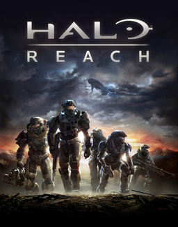

This developer is top of my list due entirely to the development of the online multiplayer game 'Warframe' which has been growing into a larger and more entertaining game since its release. The player starts out by choosing one of three available starting warframes which are like a character they will play but they are not restricted to using a single warframe, as the player progresses through the game they will be able to earn parts in order to build more warframes as well as earning new weapons, the warframesare incredibly agile, ninja-like, and can carry a primar, secondary and melee weapon, as each one is leveled up they gain abilities specific to that warframe which further enhances the gaming experience. Gameplay comes in the form of missions that can be played solo, with friends or a group of up to four random players to progress from through the missions and the games story to some extent, some of the story will be solo as it is meant to be played that way. there is also an open area on one of the planets with another much larger open are coming in future updates. I like this game not just for the ever expanding content, quality and gameplay but also because they entire game and most, if not all, of its content is free, playes can spend real money to purchase the in-game currency called platinum but they can also trade rare warframe parts and other items for platinum thereby attaining platinum without spending a penny. Only a small amount of cosmetic equipment is ever sold only for money and at present this is the only game i am aware of that gives the player this much freedom.
The above mentioned games are first or third person roleplay games with Fallout 3 & 4 set in a post apocalyptic future world and the Oblivion and skyrim games set in a medieval fantasy sometimes reffered to as the Elder scrolls world. In both worlds the player starts of receiveing a brief backstory and then creates their own character, in the case of fallout this is mainly just choosing the look and gender of their human character and they are then free to explore and open world where they can follow the story or not at their leisure exploring, conversing, hunting and fighting with a range of modern and futuristic guns and other such weapons. The elder scrolls world starts in much the same way but the player can also choose different races as well, they are then free to explore in much the same way but with swords, shields, bows, arrows and magic. Each game allows the palyer to build their own gear though only fallout 4 allowed the players to customize weapon and armour parts to improve damage and defense. The customization, freedom to go where i want and continue the story any time i want are some of the reasons i enjoy these games, being able to customize my weapons and clothing/armour as well as choosing wether to help or harm charaters i meet in the game are also aspect i enjoyed as it gave me greater freedom to choose how i woudl play through the game and how the other characters would see me. The detail and graphics of the games was also impressive and improved from fallout 3 to 4 and oblivion to skyrim. Another reason i enjoyed these games was the Downloadable content released by the developers as well as the ability to add your own content (mods) or download someone elses, a number mods i had only served to improve the look and feel of the games as well as increasing its playability with more things for me to do and explore in some cases.

3. 343 Industries - Halo 4, 5 & Reach
The Halo games are first person shooters, revolving around the story of a future humanity coming under attack by an alien race that begins wiping them out wherever they find them, a lone ship fleeing a colony world stumbles on a halo shaped ring space station and in order to protect data stored in a sophisticated AI a spartan super soldier known as the master chief escapes to the space station taking the AI with him, leading to its destruction along with the alien fleet that followed them. Althought i did enjoy the first three games, they were made by another developer so i have focused on the most recent games of which i have enjoyed Reach the most, its story taking place just before the first game in the series. I liked the overall look and the ability to customize the appearance of my characters armour, the story was fun to play through even after i had finished the game and the online multiplayer side of the game was also a lot of fun to play with my friends.
4. Frontier Developments - Elite Dangerous
Chosen for the space game Elite Dangerous, an online only multiplayer space game in which the player can choose do explore, trade or fight however they see fit, earning credits which they can use to improve their ship or even buy bigger and better ones, able to customize weapons, armor, cargo space etc, though cosmetic items do cost actual money. I like this game due to its size and the ships themselves, there is a lot a player can do if they set their mind to it and it can be a lot of fun working together with friends to complete missions, explore new systems, go bounty hunting or take part in battles. The only drawbacks are the time taken to travel places and currently there are few mission payout issues and bugs that have led to my decision to drop this game down my list a little, its agame i would recommend to anyone who enjoys a realistic sort of space adventure game even if you cant walk around your ship, yet.
5. Rockstar - Grand Theft Auto 5
Grand Theft Auto is another open world game but in this case the player switches between three playabel chacters and customization is limited mostly to clothing and hairstyle, though an only character can also be created and fully customized at the start, afterwards the characters face, gender and body cannot be changed. The story itself was fun to play and is realistic to a certain extent without being over the top in some outrageous way, i enjoyed the level of detail as well as the things i could do and see outside of the main story missions. The online multiplayer allows players to team up in different mission types that have expanded with new content and players who have made their own mission types, some of which can be quite fun even if they are quite wacky, one example being a team of snipers in a giant crows nest who must avoid the other team trying to kill them, having no weapons they drive cars and use ramps to land their vehicles in the crows nest and run over the other team or knocking them off, the drivers similarly trying not to get killed by getting stuck in or out of the crows nest and shot, the winning team being the one left standing.